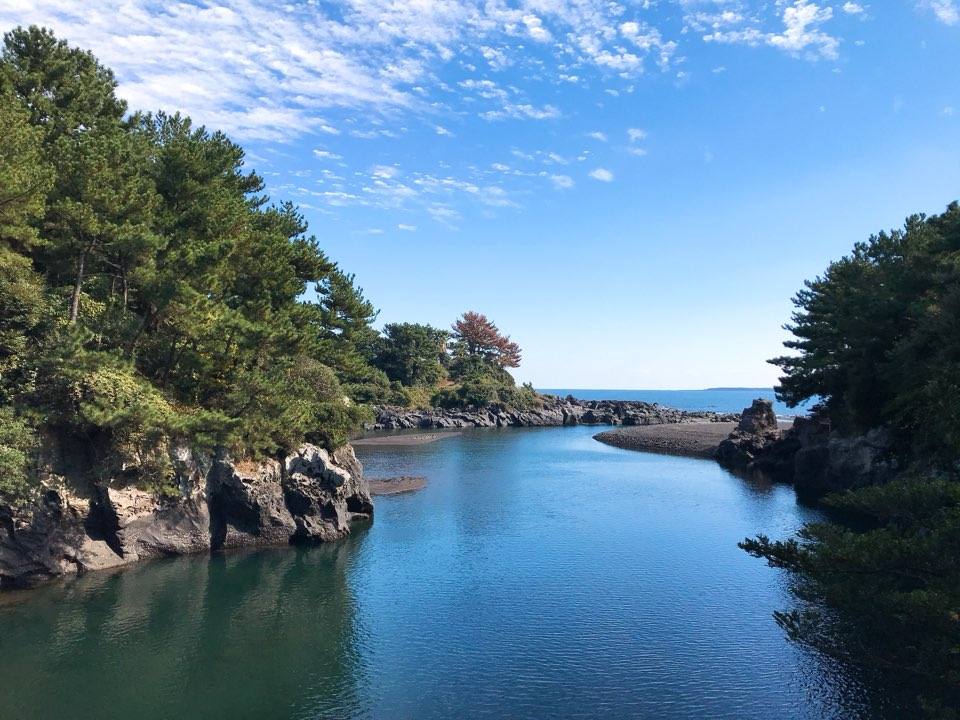

<mat-drawer-container class="example-container" autosize>
  <mat-toolbar>
      <mat-icon (click)="drawer.toggle()">menu</mat-icon>
      <span>PWA Sample</span>
    </mat-toolbar>
  <mat-drawer #drawer class="example-sidenav" mode="side">
    <mat-list>
      <mat-list-item> <a href="/" mat-raised-button color="primary">Feed</a> </mat-list-item>
      <mat-list-item> <a href="/help" mat-raised-button color="primary">Hepl</a> </mat-list-item>
      <mat-list-item> <button mat-raised-button  class="enable-notifications mdl-button mdl-js-button mdl-button--raised mdl-button--colored mdl-color--accent">
          Enable Notifications
        </button> </mat-list-item>
    </mat-list>
  </mat-drawer>
  <main class="mdl-layout__content mat-typography">
      <div id="create-post">
          <video id="player" autoplay></video>
          <canvas id="canvas" width="320px" height="240px"></canvas>
          <button class="mdl-button mdl-js-button mdl-button--raised mdl-button--colored" id="capture-btn">Capture</button>
          <div id="pick-image">
              <h6>Album pick image</h6>
              <input type="file" accept="image/*" id="image-picker">
          </div>
          <form>
          <div class="input-section mdl-textfield mdl-js-textfield mdl-textfield--floating-label">
              <input class="mdl-textfield__input" type="text" id="title">
              <label class="mdl-textfield__label" for="title" name="title">Title</label>
          </div>
          <div class="input-section mdl-textfield mdl-js-textfield mdl-textfield--floating-label" id="manual-location">
              <input class="mdl-textfield__input" type="text" id="location">
              <label class="mdl-textfield__label" for="location" name="location">Location</label>
          </div>
          <div class="input-section">
              <button class="mdl-button mdl-js-button mdl-button--raised mdl-button--colored" type="button" id="location-btn">Get Location</button>
              <div class="mdl-spinner mdl-js-spinner is-active" id="location-loader"></div>
          </div>
          <br>
          <div>
              <button class="mdl-button mdl-js-button mdl-button--raised mdl-button--colored mdl-color--accent"
                      type="submit" id="post-btn">Post!
              </button>
          </div>
          <br>
          <div>
              <button class="mdl-button mdl-js-button mdl-button--fab" id="close-create-post-modal-btn" type="button">
              <i class="material-icons">close</i>
              </button>
          </div>
          </form>
      </div>
      
      <div class="page-content">
          <h5 class="text-center mdl-color-text--primary">Share your Moments</h5>
          <div id="shared-moments"></div>
      </div>
      <div class="floating-button">
          <button mat-fab>
              <mat-icon aria-label="create post">add</mat-icon>
            </button>
      </div>
      <div id="confirmation-toast" aria-live="assertive" aria-atomic="true" aria-relevant="text" class="mdl-snackbar mdl-js-snackbar">
          <div class="mdl-snackbar__text"></div>
          <button type="button" class="mdl-snackbar__action"></button>
      </div>
      </main>
</mat-drawer-container>